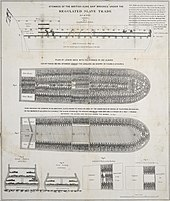
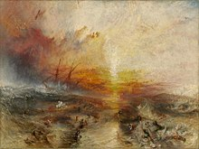

According to biologists racism should be known as a social construct. What was the beginning of this social construct - what lead to racism? It should be noted that racism was existent even in Ancient Greece, as some philosophers had shown support for racist ideologies - such as Aristotle, who actually defended slavery by stating that it was good for the slave. He has stated that some people’s sole purpose is to be used as living “tools” – here he referred to non-Greeks, which he named “barbarians”. In order to defend his ideology, he has also stated that some individuals - that usually had stronger bodies and were unintelligent, had “slave souls” (which meant that their only purpose was to be used for their strength). History has shown belief in racist ideology that people’s physical characteristics define their moral qualities. It is a well known fact that Conquistadors established slavery over Indigenous people of Central Mexico and South America (some Indigenous people – like the Aztecs already had an established system of slavery, they gained slaves during warfare) and there were evidences of discrimination of the Indigenous people, as conquistadors considered them as “savages” with a sole purpose to be exploited as workers in silver and gold mines – if they failed to do so, they would face brutal punishments.
European colonizers (United Kingdom, Spain, Portugal, Netherlands, and France) set on a voyage to the “New world” in hopes of raising their roles in world’s political affairs and in order to gain more wealth – starting in 1492 and ending in the 18th century. Upon arrival they realized that coffee, tobacco, cocoa, sugar, and cotton plantations, gold and silver mines and rice fields were labor intensive and since European servants required payment and protection – they turned towards slavery. However it should be noted that the Portuguese were the first to establish slavery (in Africa and Portugal). The slavery didn’t just apply for people of African origin. In need for free laborers after unsuccessful attempts in enslaving Native Americans colonists have turned to Africa (capturing Native Americans has proven to be difficult as they had familiarities with the terrain, and those that were enslaved would usually die from disease that Europeans brought to America). Those events have lead to existence of the notion “the Atlantic slave trade”. The slave traders were usually Europeans, African tribes from West Africa or Islamic traders over others. Europeans wanted slaves that were easier to control, they wanted slaves to have difficulties escaping – thus Africans who managed to escape would face the neighboring Native nations. What also made it easier to enslave Africans was their familiarity with agricultural methods for these kinds of crops and their accessibility to sea ports. When faced with an opportunity to grow their wealth, African kings and merchants began selling slaves. The slaves were usually previously captured during warfare with neighboring tribes, they could even be debtors or criminals. As the demand for slaves became greater, slave traders were forced to take more drastic measures. Slave traders began to involve themselves in conflicts with neighboring countries in order to gain more slaves. Slavery became a reason to start wars, instead of being the result of war. It is estimated that about 12 million Africans had been taken to America through this process and almost 2 million didn’t survive the journey.
The slaves were treated brutally even before arriving in America – before going onboard slaves were shaved in order to prevent lice, they had their personal belongings taken and they were branded. Upon arriving on the ship slaves were segregated by age and gender – men would be shackled in pairs, while women would be free of shackles in their compartments, however children would be free to roam around the ship. The conditions that the slaves were kept in were unsanitary – resulting in disease running rampant (measles, smallpox, scurvy etc.). Slaves were sometimes forced into exercise, even dancing in order to prepare them for hard labor or just for amusement of the crewmates. There were many cases of women being sexually abused by the crew members of the ship, resulting in them carrying children of their attackers upon arrival.
The truth about mistreatment of slaves truly came into light during the trial of “The Zong”. The ship left Africa in 1781, during the journey that lasted 2 months (because of navigation errors) the water supplies was running low while disease was running rampant. Because slaves that have died from disease weren’t covered by insurance – the captain of the ship began to worry about the financial cost and the final outcome of the voyage. In order to save their wealth – the crewmates were ordered to throw 133 slaves over the deck of the ship as insurance covered slaves who had drowned. During the trial of “The Zong” – owners of the ship defended their actions by stating that it is legal to throw sick animals over board for the sake of the crew and that their actions were the same. This action has brought attention to racist ideologies and mainly the treatment of black people in America.
 